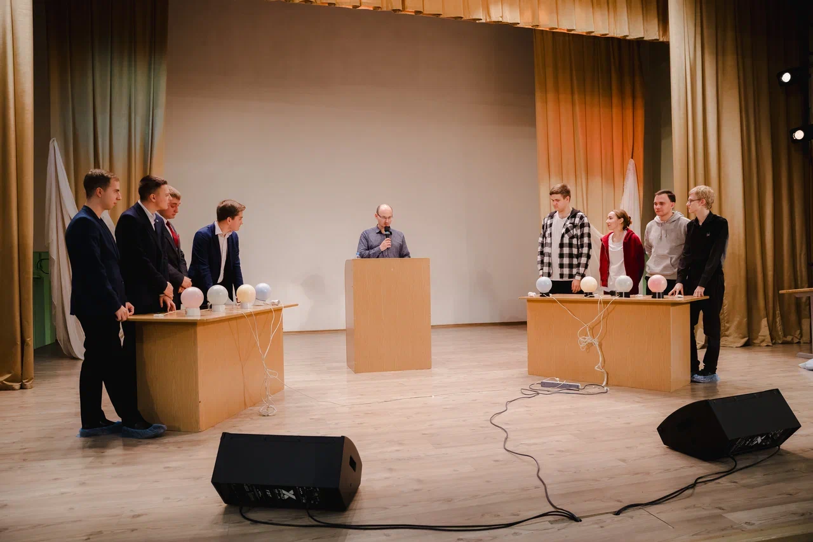

ФОНД РАЗВИТИЯ КУЛЬТУРЫ «ЭФЕС»
На протяжении многих лет, гражданско-патриотический фестиваль «Морской район Морской столицы» предлагает молодежи уникальный формат вовлечения в творческую и общественную активность, объединяя разнообразные мероприятия, концерты и конкурсы. Участие в мероприятиях поднимает интерес к истории города, культурному наследию и его связи с морем. Фестиваль позволяет создать уникальную городскую морскую идентичность, увеличивая гордость за место, где живут участники. А традиционные мероприятия, новые конкурсы и соревнования между молодежными командами административных районов делают фестиваль увлекательным и запоминающимся.
Основная конкурсная программа Фестиваля включают разные творческие направления, в которых отражается любовь к городу и осознания своей идентичности:
- Интеллектуальной игра «Морская баталия» только в первом этапе соревнуется по несколько команд из районов, но лишь немногие попадают в финал;
- Фотоконкурс «Паруса молодежи» включает до 1000 конкурсных работ, посвященных Петербургу, морю, людям морских профессий и энтузиастам и номинация «Жемчужина Балтики»;
- Вокальный конкурс «Невская рапсодия» молодежные таланты административных районов города. В репертуаре песни морской тематики, патриотической направленности и о Ленинграде, Санкт-Петербурге;
- Конкурс чтецов «Иллюминатор» - новый конкурс, на котором настаивали представители районов;
- Арт-конкурс «Искусство без границ» представляет креативную молодежь города. От изобразительного искусства до декоративно-прикладного искусства и ремесленничества;
В Интеллектуальной игре «Морская баталия» Оригинальный формат проведения позволяет выявить знатоков города, его истории и людей, прославивших Морскую столицу.

Количество благополучателей: 2000 человек.
Количество волонтеров: 40 человек.